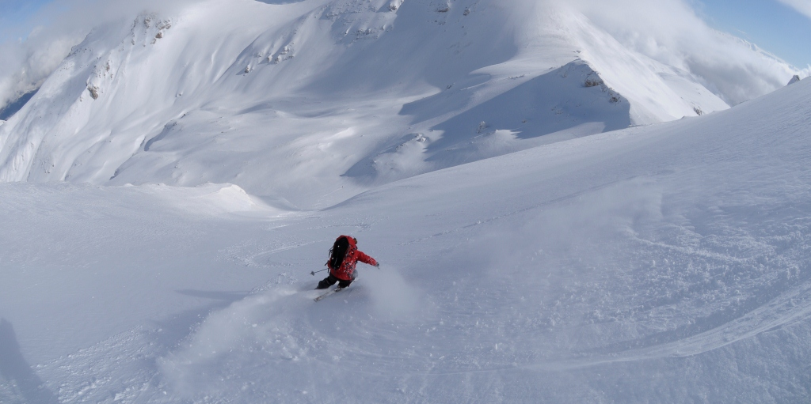

Activities
The potential for outdoor activities is endless, but a lack of tourist infrastructure makes it difficult to do much independently in Macedonia. Hiking, paragliding, mountain biking and horse riding are all possible with a bit of planning.
Hiking
Hiking trails are scribbled across the landscape from north to south and east to west (particularly in Galičica, Pelister and Mavrovo National Parks), but invariably the trail markers are not well maintained. Proceed with caution at all times.
Hiking guides cost from between €50 and €80 a day, or consider investing in a GPS if you want to do any serious walking in the country. Balkan Hiking Adventures (www.balkanhikingadventure.com) is a network of 37 cross-border trails between Macedonia, Kosovo and Albania, and an excellent online resource with downloadable maps for a number of trails around Lake Ohrid and in the Baba Mountains (Pelister National Park). A good organisation for tailored tours with professional guides is Hiking The Balkans (www.hikingthebalkans.com).
Macedonia is chronically affected by summer wildfires. Hikers should check conditions in advance – if you get stuck in the wrong patch of forest, it could not only be dangerous, it could also be illegal if firefighters or park wardens have closed the area. Information on wildfires are communicated on the news service.
Camping in Mavrovo
Hiking trail in Sharr Mountains
Karanikolica Lake
Mountain Biking
This activity is usually organised only as multiday trips. Some of the walking trails in Pelister National Park are used by mountain bikers; Petar at Villa Dihovo can arrange rides there. Ride MK is a professional outfit that can organise tours anywhere in the country.
Going extreme
From the peak
Kayaking and climbing in Matka canyon
Kayaks can be rented without prebooking at Canyon Matka, but you don't get long on the water and it's very tame in summer – for beginners only.
Kayaking in Matka
Reaching the top
Skiing
Macedonia's premier ski resort is Zare Lazarevski in Mavrovo, though there are also some ski runs in Pelister. It is now possible to ski from Macedonia into Kosovo on Shar Mountain with specialised skiing guides. Shar Outdoors (www.sharoutdoors.com) organises cross-border skiing tours so you can glide between Macedonia, Kosovo and Albania.
 Popova Sapka
Popova Sapka

Popova Sapka
 Mavrovo
Mavrovo